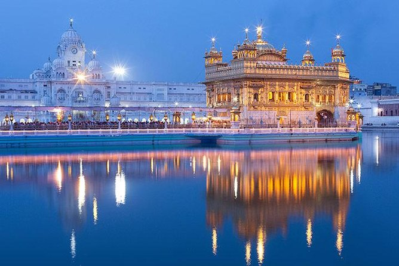
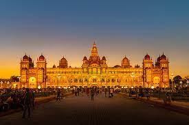
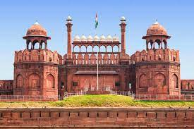
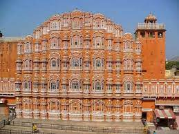
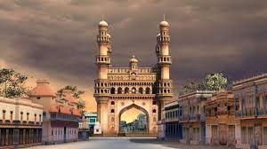

Taj Mahal

The Taj Mahal is one of the seven wonders of the modern world, boasting of exuberant architecture. It is also one of the most important historical symbols of romance - A tomb built by the Mughal emperor, Shah Jahan, in memory of his favourite wife, Mumtaz Mahal, it is the most amazing example of a raised-tomb structure.
Golden Temple
The Golden temple is located in the holy city of the Sikhs, Amritsar. The Golden temple is famous for its full golden dome, it is one of the most sacred pilgrim spots for Sikhs. The Mandir is built on a 67-ft square of marble and is a two storied structure.
Mysore Palace
Mysore Palace, also known as Amba Vilas Palace, is a historical palace and a royal residence (house). It is located in Mysore, Karnataka, India. It used to be the official residence of the Wadiyar dynasty and the seat of the Kingdom of Mysore.
Agra Fort

Agra Fort is a historical fort in the city of Agra in India. It was the main residence of the emperors of the Mughal Dynasty till 1638, when the capital was shifted from Agra to Delhi. The Agra fort is a UNESCO World Heritage site.It is about 2.5 km northwest of its more famous sister monument, the Taj Mahal.
Red Fort
The Red Fort in Delhi is not only an architectural marvel but also witness to some of the most crucial events in Indian history. The Delhi Red Fort is known by various other titles like Lal Qalʿah (लाल क़िला in Hindi also spelled Lal Kila or Lal Qila) and Qila-e-Mubarak (the blessed fort).
Gateway Of India

The Gateway of India is an arch-monument built in the early 20th century in the city of Mumbai (Bombay), India. It was erected to commemorate the landing of King-Emperor George V, the first British monarch to visit India, in December 1911 at Strand Road near Wellington Fountain.
Hawa Mahal
The Hawa Mahal is a five-storey building, and it is the tallest building in the world that has been built without a foundation. It has a curved architecture that leans at an 87 degree angle, and a pyramidal shape which has helped it stay erect for centuries. The Hawa Mahal is dedicated to Lord Krishna.
Charminar
Charminar is one of the oldest monuments in India, and it is situated in Hyderabad, Telangana. Charminar was built in 1591 and is a symbol of Hyderabad. This monument is the official emblem of Telangana. Charminar is derived from Urdu, meaning 'Four Pillars.